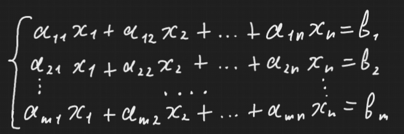

Здесь aij коэффициенты системы. bi назовем свободными членами (ну или свободными коэффициентами). Множество, вида {x1, x2 ... xn}, содержащее такие xi, что при подстановке в систему, все уравнения становились истинными, называется решением СЛУ (СЛУ - система линейных уравнений).
СЛУ называется совместной если множество ее решений не пусто, в противном случае это система называется несовместной.
СЛУ считается определенной, если множество ее решений состоит из одного элемента, однако если система совместна, а множество состоит более чем из одного набора решений, то такая система будет называться неопределенной.